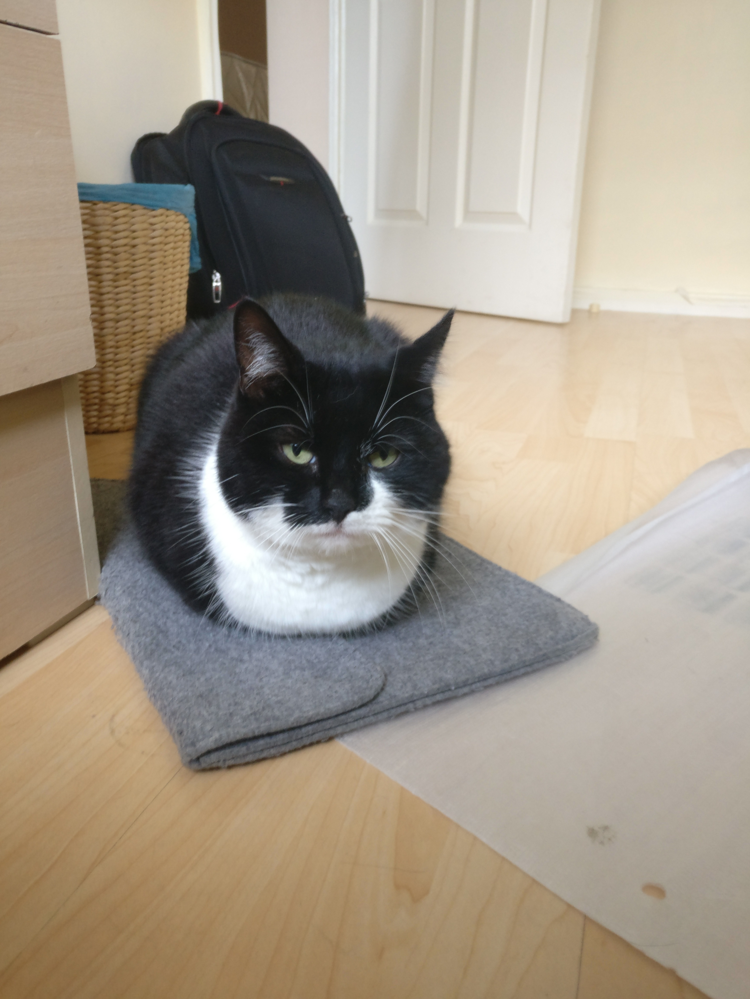

welcome to the web pages for troy kaighin astarte.
it is meant to look like this. it’s a statement.
troy kaighin astarte is (for now) a lecturer in computer science at swansea university. troy graduated with a degree in computer science and a phd in the history of computer science from newcastle university. their research is in the history of computing and computer science, with previous work on the history of programming language semantics and concurrency. troy’s teaching is in various areas of computing with a focus on shaping a more socially-aware generation of graduates. troy is the editor-in-chief of ieee annals of the history of computing, a member of the ieee cs history committee, and acm history committee.
as an agender person (pronouns: they/them) troy appreciates gender-neutral terms of address. this is why the bio is written in the third person. they like to be called ‘troy’ or if more formality is needed, ‘dr. troy’. please, not ‘professor’ or ‘sir’.

Last updated: 2025-08-07